What if you could scan 33,000 wallets on Hyperliquid? Find the top 20 most profitable traders. See exactly what they're buying right now. Their entry prices, their leverage, their unrealized P&L, and get a complete trade plan based on all of it. No API keys needed, no coding, no manual research.
Interface & Outils : Terminal de commandes (CLI) / Script de suivi de portefeuilles crypto.
Contenu textuel & Code : Rapport « Hyperliquid Whale Report » montrant le portefeuille #1 (0xecb6...2b00) avec un PnL global de +204,4M$, un PnL mensuel de +5,2M$, une valeur de compte de 71,8M$, ainsi qu'un tableau des positions clés (Coin, Direction, Size, Entry, Leverage, uPnL) pour BTC, ETH, SOL, ENA, LINK, FARTCOIN, WLD, AAVE, HYPE, MON, DOGE.
Action / Démonstration : Génération et affichage du rapport d'analyse automatisé des portefeuilles les plus rentables.
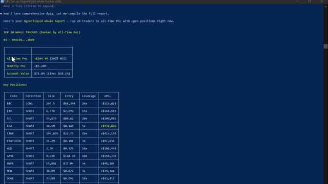
🔍 AgrandirIn this video, I'm going to show you exactly what this looks like live on screen. Every feature, every use case. and at the end i'll tell you exactly how you can get all of this for yourself so without any further ado let's get straight into it all right you need one tool for this setup this will be very quick claude code this is the agentic version of claude ai it doesn't just talk it actually acts it connects to hyperliquid's public api scans thousands of wallets ranks traders by profitability and gives you a complete breakdown of what smart money is doing right now all from plain english
Interface & Outils : Page web du guide de configuration de Whale Tracker et site officiel de Claude (Anthropic).
Contenu textuel & Code : Texte descriptif sur le scan de plus de 33 000 portefeuilles Hyperliquid, options de téléchargement de compétences et commande d'installation `irm https://claude.ai/install.ps1 | iex`.
Action / Démonstration : Navigation sur la page de présentation du script de suivi de baleines et passage à la page de téléchargement/installation de l'outil Claude Code.
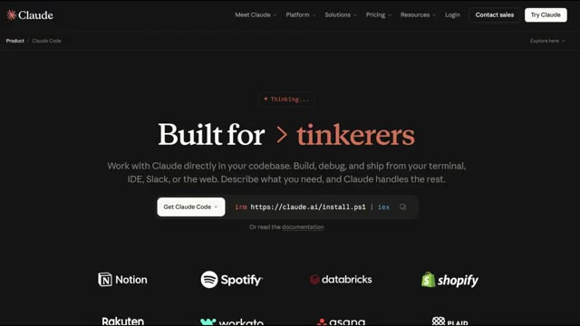
🔍 AgrandirThe pro plan at $20 a month is all you need. Now, Hyperliquid. Very quickly. It's a decentralized perpetual exchange running on its own blockchain. No KYC. No middleman. And because it's fully on-chain, every single trade, every position, every wallet, it's all public. That's what makes this possible.
Interface & Outils : Documentation en ligne Hyperliquid (GitBook) et interface de trading décentralisée Hyperliquid.
Contenu textuel & Code : Texte explicatif sur la blockchain L1 Hyperliquid, le consensus HyperBFT, ainsi que les options de connexion de portefeuilles (Log in with Email, MetaMask, OKX Wallet, WalletConnect, Coinbase Wallet).
Action / Démonstration : Navigation et présentation de la documentation officielle puis affichage du module de connexion utilisateur sans KYC de la plateforme.
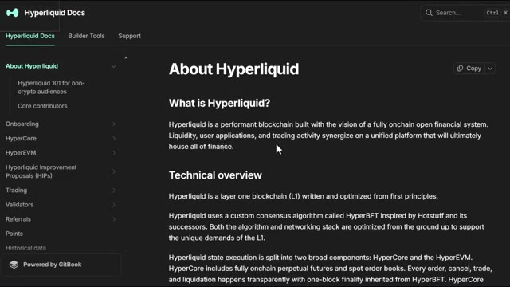
🔍 Agrandir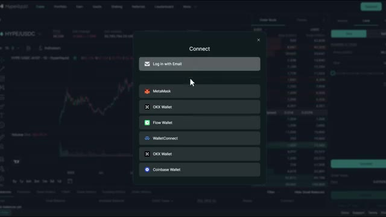
🔍 AgrandirHyperliquid's API is completely free and public, and Claude connects to it automatically with a skill code I created. And if you want the full step-by-step setup instructions, every prompt and the skill code itself, all of that is inside the AI Trade Edge community. Link is in the description. That's the setup.
Interface & Outils : Documentation technique Hyperliquid, page web personnalisée Alex Carter Trading.
Contenu textuel & Code : Liens SDK GitHub, spécifications de l'API publique, métriques de portefeuilles suivis (33,000+), liste des fonctionnalités de trading par API (ordres, positions, historique).
Action / Démonstration : Navigation à travers la documentation et les guides de configuration pour l'intégration de l'API et du skill Claude.
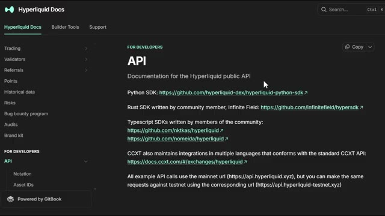
🔍 Agrandir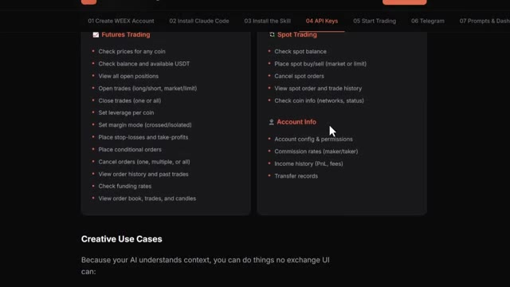
🔍 AgrandirNow let me show you what it actually does. All right, let me open Claude Code and show you this live. Here's the first thing I want to show you. Claude scans the top 20 most profitable wallets on Hyperliquid right now, pulls every open position, and ranks them by total profitability. All in one shot. Watch what happens. Claude hits Hyperliquid's public endpoints, starts pulling wallet data across 33,000 addresses, ranks them by profitability, and starts building the report.
Interface & Outils : Terminal de commandes Claude Code (CLI)
Contenu textuel & Code : Informations de version (Claude Code v2.1.92, Opus 4.6), chemin du répertoire utilisateur et invite de commande vide avec le curseur.
Action / Démonstration : Ouverture du terminal pour démarrer la démonstration en direct et lancer des scripts d'analyse des portefeuilles Hyperliquid.
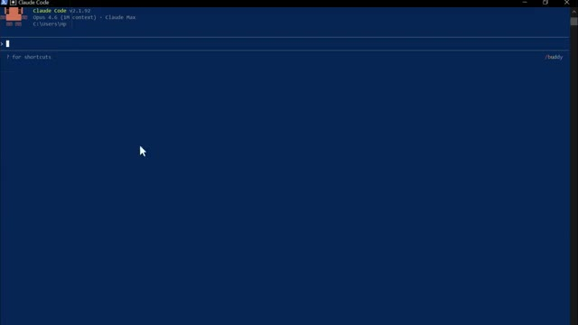
🔍 AgrandirTu peux le voir fonctionner à travers les portefeuilles en temps réel. Les prix d'entrée, l'effet de levier, les profits et pertes non réalisés, tout arrive en direct. Et voici le résultat. Les 20 principales baleines classées, chaque position ouverte répertoriée. Et en bas, le résumé du sentiment global. En ce moment, l'argent intelligent est acheteur net sur le Bitcoin et vendeur net sur presque tout le reste, en particulier Ethereum.
Interface & Outils : Terminal de commandes / Interpréteur de scripts
Contenu textuel & Code : Données JSON formatées listant des paires de cryptomonnaies (MOODENG, HYPE, VIRTUAL, MORPHO, IP), la direction des positions (SHORT), la taille, le prix d'entrée, les profits et pertes non réalisés (unrealized_pnl), l'effet de levier et le prix de liquidation.
Action / Démonstration : Suivi et affichage en temps réel des portefeuilles et positions ouvertes des baleines via un script.
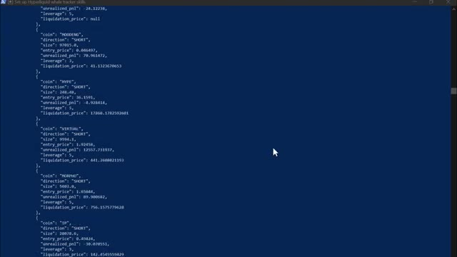
🔍 AgrandirC'est le genre de signal qu'il fallait des heures pour reconstituer manuellement. Claude le fait en moins d'une minute. Maintenant, c'est là que ça devient vraiment intéressant. Ce prompt compare les 20 portefeuilles les plus rentables aux 20 portefeuilles les plus perdants et trouve chaque jeton où ils sont sur des côtés opposés de la transaction.
Interface & Outils : Terminal de commandes en ligne de commande (CLI) sur fond bleu.
Contenu textuel & Code : Métriques de performance globale (« All-Time PnL +$204.4M », « Monthly PnL +$5.28M », « Account Value $71.8M ») et tableau des positions ouvertes (« Key Positions ») détaillant les cryptos (BTC, ETH, SOL, ENA, LINK, FARTCOIN, WLD, AAVE, HYPE, MON, DOGE, PUMP), la direction (LONG/SHORT), la taille, le prix d'entrée, le levier et l'uPnL.
Action / Démonstration : Analyse et affichage des données des portefeuilles des baleines de la plateforme Hyperliquid générées par l'outil.
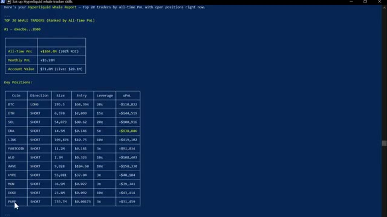
🔍 AgrandirRegardez-le tirer sur les deux groupes simultanément : les portefeuilles rentables d'un côté, les portefeuilles perdants de l'autre, et ensuite il commence à croiser les positions. Voici le résultat. Vous pouvez voir là où les deux groupes sont d'accord. Ils sont tous les deux acheteurs sur suey, donc c'est un trade encombré. Mais regardez ça. L'argent intelligent est massivement acheteur sur XMR, TRX, Pendle et Farcoin, tandis que les traders de détail sont vendeurs sur ces cryptos. Cette divergence juste là, c'est le signal. C'est le genre d'analyse pour laquelle les hedge funds payent. Vous l'obtenez grâce à un outil d'IA à 20 dollars et une API publique gratuite. Au fait, si vous trouvez cela utile jusqu'à présent, restez jusqu'à
Interface & Outils : Terminal de commande en ligne de type CLI / script Python.
Contenu textuel & Code : Statistiques globales (All-Time PnL +$204.4M, Monthly PnL +$5.28M, Account Value $71.8M) et tableau des positions ouvertes par crypto (BTC, ETH, SOL, ENA, LINK, etc.) avec direction, taille, prix d'entrée, levier et PnL non réalisé.
Action / Démonstration : Présentation des données d'analyse des positions des traders performants (Whale Tracker).
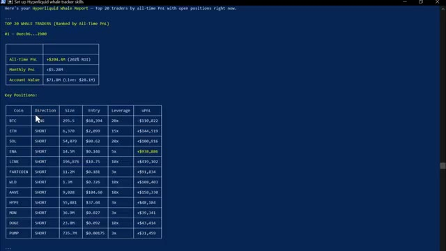
🔍 Agrandirfin. Je vais vous montrer comment obtenir un plan de trading complet généré par IA avec un point d'entrée spécifique, un stop-loss et un take-profit, le tout basé sur le positionnement des baleines. Ça arrive dans une minute. Celui-ci, je le lance chaque fois que je cherche un setup à haute conviction. Claude trouve un token où les traders particuliers sont massivement positionnés d'un côté et où l'argent intelligent est soit neutre, soit de l'autre côté.
Interface & Outils : Terminal de commandes ou interface CLI.
Contenu textuel & Code : Analyse du positionnement des baleines (100% top traders LONG, 0% rekt SHORT), tableau de plan de trading pour XMR (Monero) avec prix d'entrée ($325-330), stop-loss ($305), take-profit 1 ($355) et take-profit 2 ($385), effet de levier (5x), taille de position, et niveau de confiance (7/10) avec explications détaillées.
Action / Démonstration : Présentation et explication d'un plan de trading complet généré par IA basé sur les baleines.
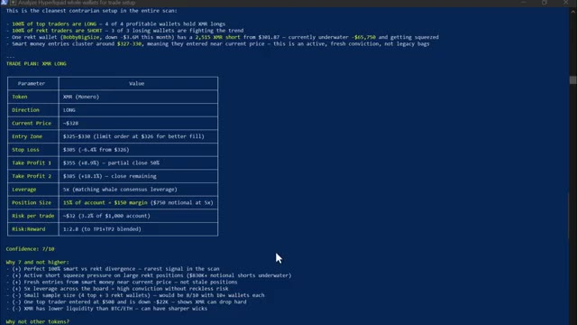
🔍 AgrandirEnsuite, il vous donne un trade spécifique. Regardez-le parcourir les données de divergence qu'il a déjà récupérées. Il cherche le plus grand écart entre la position des portefeuilles perdants et celle des portefeuilles rentables. Et voici le résultat. Il a signalé l'ETH où l'argent des investisseurs lambda est à 93 % net vendeur et l'argent intelligent a une exposition presque nulle du côté vendeur. Claude explique la divergence, pourquoi c'est important, puis vous donne un point d'entrée, un stop-loss et un take-profit spécifiques. C'est une idée de trade complète générée en quelques secondes sur la base de données de positionnement réelles provenant de milliers de traders en direct.
Interface & Outils : Terminal de commandes / Interpréteur de scripts Bash et Python
Contenu textuel & Code : Scripts de traitement de données JSON, affichage de résultats agrégés pour le Smart Money (Top 25 PnL) avec des lignes pour BTC et ETH (ex: ETH: 11L / 7S (18) 61% long), et tentatives de récupération de prix via l'outil TradingView / script Weex.
Action / Démonstration : Exécution de scripts en ligne de commande pour récupérer et analyser les positions des portefeuilles et inspecter les données sur l'ETH.
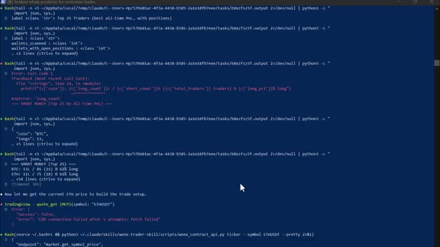
🔍 Agrandirportefeuilles. Maintenant, celui-ci est conçu pour lorsque vous surveillez déjà un jeton spécifique et que vous voulez savoir ce que les meilleurs traders du marché font avec. Regardez-le filtrer pour ne garder que les positions en ETH du groupe de portefeuilles rentables. Prix d'entrée moyen, effet de levier moyen, exposition totale, le tout calculé en direct. Et voici le résultat. L'entrée moyenne de l'argent intelligent sur l'ETH se situe à 2 081 $ pour les longs et 2 096 $ pour les shorts. L'effet de levier moyen est de 19,3 fois sur les longs et de 17,8 fois sur les shorts.
Interface & Outils : Terminal de commandes (script Python / interface CLI).
Contenu textuel & Code : Tableaux de métriques pour le 'SMART MONEY (Top 20 by All-Time PnL)' : Traders (10 longs, 5 shorts), Avg Entry ($2,081.23 / $2,096.29), Avg Leverage (19.3x / 17.8x), Total Exposure ($8.65M / $20.17M), et PnL combiné.
Action / Démonstration : Affichage des données de positionnement sur ETH filtrées par portefeuille rentable et analyse textuelle du sentiment du marché.
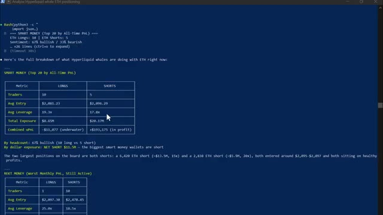
🔍 AgrandirL'exposition longue totale sur l'ensemble des principaux portefeuilles est de 8,65 millions de dollars. Et ensuite, Claude vous donne les deux côtés, le scénario haussier et le scénario baissier, basés uniquement sur la façon dont ces portefeuilles sont positionnés. C'est votre avantage. Vous savez ce que font les traders les plus rentables du marché avec le token exact que vous examinez avant d'ouvrir une seule position. Maintenant, celui-ci est mon préféré personnel. Si vous tombez un jour sur un portefeuille qui génère absolument un max de profits, vous pouvez coller l'adresse directement dans Claude et obtenir une analyse complète de tout ce que ce portefeuille a jamais fait. Regardez-le extraire l'historique complet du portefeuille.
Interface & Outils : Présentation ou face-caméra explicatif du trader sans interface logicielle partagée.
Contenu textuel & Code : Explications orales des stratégies et mise en contexte méthodologique du marché.
Action / Démonstration : Explications face caméra et analyse conceptuelle des marchés.
historique, positions ouvertes, P&L total, plus grands gains, plus grosses pertes, profil de risque. Et voici le résultat. Ce portefeuille affiche un gain total de 400 000 dollars. Son plus gros gain individuel a été de 276 000 dollars sur un short DYDX. Il utilise un faible effet de levier, principalement de 3x à 10x. Et en ce moment, il détient une position long importante sur le XRP et des positions plus petites sur le BNB et le Bitcoin. Le verdict de Claude ? Oui, c'est un trader qui vaut la peine d'être suivi.
Interface & Outils : Interface de terminal de commande en ligne (CLI)
Contenu textuel & Code : Tableaux 'Wallet Overview' (Account Value: $13,910,150, Total Open Positions: 106, Long: 47, Short: 59, Net Unrealized PnL: +~$400K) et 'Top 10 Biggest Winners (Unrealized)' détaillant les cryptos shortées (DYDX: +$276,096, PUMP: +$198,293, etc.) avec effet de levier.
Action / Démonstration : Présentation et analyse des performances et des positions ouvertes d'un portefeuille de type 'whale' sur Hyperliquid.
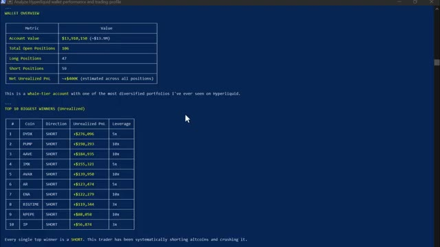
🔍 AgrandirMaintenant, vous pouvez suivre exactement ce que fait ce portefeuille ensuite. Celui-ci, je le lance tous les matins avant de faire quoi que ce soit d'autre. Claude extrait les 50 meilleurs portefeuilles de baleines, trouve ce qui est accumulé, ce qui est délesté, toutes les nouvelles positions ouvertes au cours des dernières 24 heures, et vous donne la transaction avec la plus forte conviction parmi les 10 portefeuilles les plus rentables, le tout formaté sous forme de briefing matinal rapide.
Interface & Outils : Terminal de commandes (CLI) / Script d'analyse Python.
Contenu textuel & Code : Tableaux de données textuels classés par tokens avec le nombre de positions Long, Short et le biais (ex: GRIFFAIN, SCR, MAV, XLM, ONDO, LIT, LINK, ZEC, ETH, MON), ainsi qu'une analyse textuelle soulignant les positions des baleines ("Dumping / Exiting").
Action / Démonstration : Affichage des positions des portefeuilles de baleines pour identifier les tokens délestés ou accumulés par les smart money.
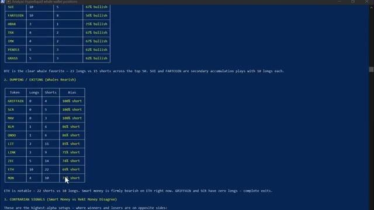
🔍 AgrandirRegardez-le s'exécuter. Analyse de 50 portefeuilles, signalement des accumulations, signalement des sorties, extraction des nouvelles positions des dernières 24 heures. Et voici le résultat. Propre, formaté, lisible. Bitcoin et altcoins sont en cours d'accumulation. L'argent intelligent est fermement baissier sur Ethereum en ce moment. Un trader a ouvert une position vendeuse sur E&A à cinq fois avec près de 950 000 dollars de profit, et un autre trader est acheteur à vingt fois sur le Bitcoin avec près de 50 000 dollars de profit. Et vous pouvez également voir le trade de plus forte conviction en ce moment
Interface & Outils : Terminal de commande en ligne de texte (CLI) sur fond bleu.
Contenu textuel & Code : Rapport « WHALE ALPHA SCAN » du 8 avril 2026. Tableau 1 (Accumulation) listant les tokens (BTC, SUI, FARTCOIN, HBAR, TRX, IMX, PENDLE, GRASS) avec le nombre de positions Long, Short et le biais haussier. Tableau 2 (Dumping / Exiting) listant les tokens à tendance baissière.
Action / Démonstration : Affichage des résultats d'un script d'analyse automatisée de 50 portefeuilles de baleines, mettant en avant les accumulations et les sorties.
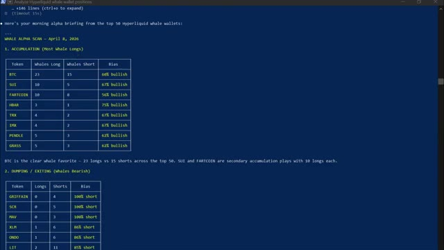
🔍 Agrandirparmi les 10 meilleurs portefeuilles avant même d'avoir bu mon café. C'est l'avantage matinal. Et celui-ci, le dernier, c'est celui que j'utilise quand je veux que Claude me dise simplement quelle est la toute meilleure caractéristique sur le marché en ce moment. Regardez-le exécuter l'analyse complète, en croisant les portefeuilles rentables avec les portefeuilles perdants, pour trouver le consensus directionnel le plus fort. Et voici le résultat. Jeton XMR. Direction long.
Interface & Outils : Terminal de commandes / console en ligne de commande affichant du texte formaté en bleu foncé avec du texte jaune et blanc.
Contenu textuel & Code : Un tableau de données comparant 'Smart Money' et 'Rekt Money' pour différentes cryptomonnaies (XMR, BTC, ETH, HYPE, LIT, SUI) ainsi qu'un plan de trade détaillé pour XMR (Monero) indiquant une position LONG, un prix actuel d'environ 328 $, et une zone d'entrée.
Action / Démonstration : Exécution d'un script d'analyse de données de portefeuilles de baleines affichant les signaux et les recommandations de trading (Smart Money vs Rekt Money).
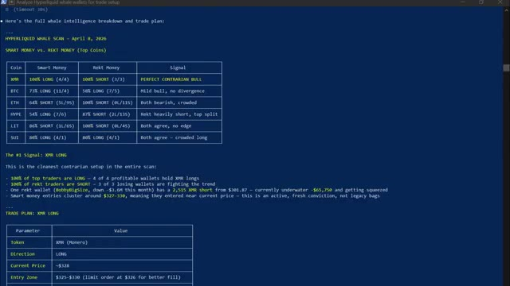
🔍 AgrandirEntrée 328 dollars. Stop loss 305 dollars. Premier take profit 355 dollars. Deuxième take profit 385 dollars. Taille de la position. 15 % d'un compte de 1 000 dollars. Confiance, 7 sur 10. Raisonnement, divergence parfaite à 100 % entre smart money et REC, le signal le plus rare du scan. C'est un plan de trading complet, élaboré à partir de données de positionnement réelles provenant de milliers de portefeuilles en direct en moins de quelques minutes. Une chose avant d'entrer dans le vif du sujet, faites toujours vos propres recherches. Les données de suivi des baleines ne sont qu'une pièce du puzzle,
Interface & Outils : Terminal de script / Interface CLI personnalisée
Contenu textuel & Code : Tableau récapitulatif du trade plan XMR Long : Token XMR (Monero), Direction LONG, Current Price ~$328, Entry Zone $325-$330, Stop Loss $305, Take Profit 1 $355, Take Profit 2 $385, Leverage 5x, Position Size 15% of account, Confidence 7/10.
Action / Démonstration : Présentation détaillée du plan de trading et des niveaux de prix pour la crypto-monnaie Monero (XMR).
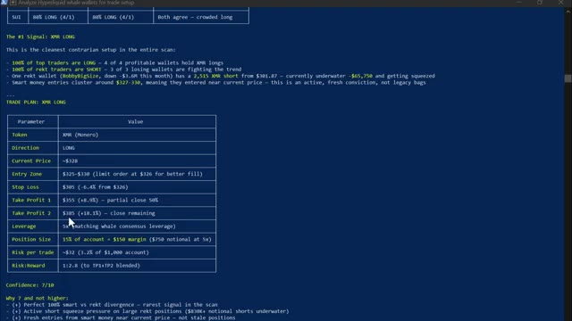
🔍 Agrandirpas toute la vue d'ensemble. Combinez toujours les données sur les baleines avec votre propre analyse de graphiques et votre gestion des risques avant de prendre toute décision de trading. Les performances passées des portefeuilles de baleines ne garantissent pas les résultats futurs. Et pour les prochaines années, deux types de traders existeront. Celui qui utilise l'IA et se simplifie la vie et celui qui ne le fait pas et fait encore tout manuellement. Et dans le même marché, cela façonnera un résultat très différent. Voici comment vous obtenez tout cela. Je lance la communauté AI Trade Edge. Chaque invite, bot, agent, modèle et guide étape par étape que j'utilise personnellement
Interface & Outils : TradingView, interface web du courtier WEEX, réseau social X (Twitter).
Contenu textuel & Code : Graphique de prix du Bitcoin (BTC/USDT Perpetual Contract) en timeframe de 5 minutes avec bougies vertes et rouges, barre d'outils technique TradingView.
Action / Démonstration : Affichage et analyse visuelle de l'évolution du cours du Bitcoin sur un graphique de trading en temps réel.
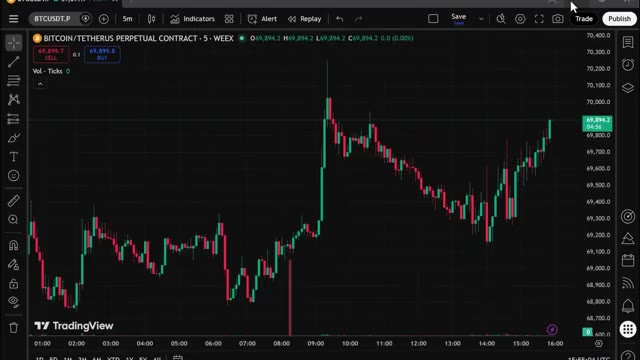
🔍 Agrandirto use all in one place. Everything I showed you today is inside and everything I build going forward gets added straight into the group. Every new integration, every new strategy, every new prompt, every update. This hyper liquid whale tracking setup, it's already inside along with trading view and telegram integration. The moment you join, you get it all. The price is $79.99 a month. And honestly, when you think about what this actually is, the most cutting edge AI trading setup available to retail traders right now, constantly updated with everything included.
Interface & Outils : TradingView, interface Web Whop.
Contenu textuel & Code : Graphique Bitcoin perpétuel avec indicateurs de signaux de trading (Buy/Sell), indicateur technique en bas de graphique.
Action / Démonstration : Présentation d'un graphique technique avec signaux intégrés.
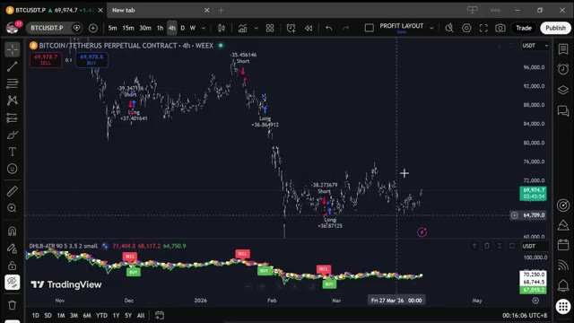
🔍 AgrandirThat is not a lot of money. One good trade covers it. But the first 100 members lock in that rate permanently. After that, the price goes up. So the earlier you get in, the better the deal. The link is in the description. Get in now before the price goes up. You genuinely cannot afford to miss this. And that is it. Cloud Code and Hyperliquid's public API, your own AI whale tracker, scanning 33,000 wallets and telling you exactly what smart money is doing right now. If you want to see the full demo on how to set up automated trade execution using Telegram and TradingView,
Interface & Outils : Page web Whop, interface CLI Claude Code, et site web personnel Alex Carter Trading.
Contenu textuel & Code : Tarifs d'abonnement (79.99$/mois), interface de terminal Claude Code, et fonctionnalités du Whale Tracker (33 000+ portefeuilles scannés, sans clé API requise).
Action / Démonstration : Présentation de l'offre payante de bots de trading et téléchargement d'une extension/skill Claude Code.
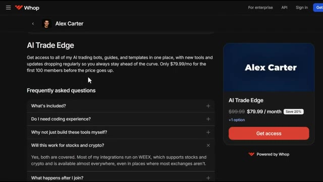
🔍 Agrandir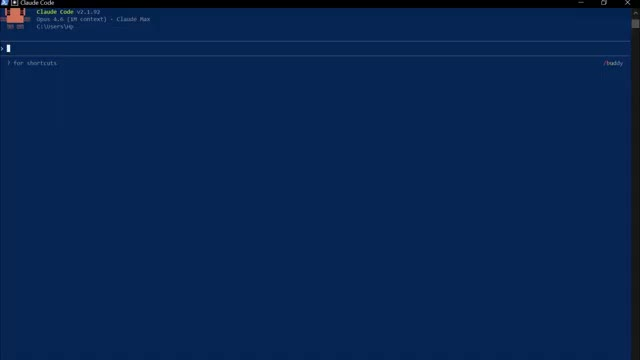
🔍 Agrandir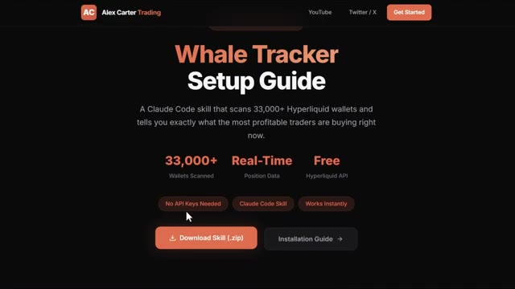
🔍 Agrandircheck the video popping on screen right now. If you found this useful, leave a like. It really does help the channel. Subscribe if you haven't already, and I will see you in the next one.
Interface & Outils : Aucun
Contenu textuel & Code : Aucun
Action / Démonstration : Aucune action ou démonstration visible.